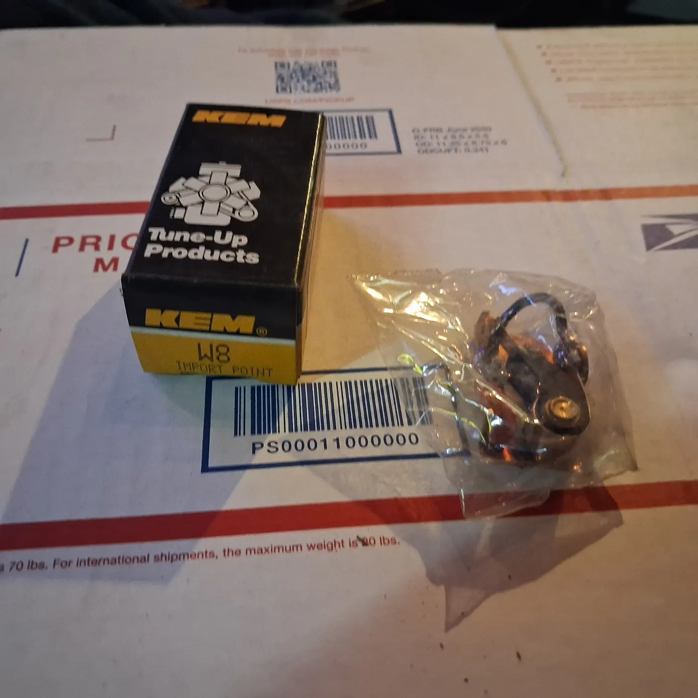

1966-1982 KEM W8 Ignition Points Volkswagen Beetle Volvo 244 BMW 2002 Mercedes
Auto Parts & Accessories
$21.99
Shipping: Free UPS Ground
Only 1 left
Fitment
Part numbers
- W8
Interchange
- Standard GB-4173P
- BWD A520
- ACDelco E122Z
- Bosch 1237013142
Fits (examples)
- 1978-1979 AMC Concord
- 1977-1978 AMC Gremlin
- 1979 AMC Spirit
- 1976-1977 Alfa Romeo Alfetta
- 1969-1974 Alfa Romeo Berlina
- 1968 Alfa Romeo Duetto 1600
- 1969-1973 Alfa Romeo GT Veloce
- 1970-1972 Audi 100 Series
- 1980 Audi 4000
- 1973-1979 Audi Fox
- 1970-1972 Audi Super 90
- 1969-1971 BMW 1600
- 1966-1971 BMW 1600-2
- 1966-1968 BMW 1600ti
- 1969-1971 BMW 1602
- 1969-1971 BMW 1800
- 1971 BMW 1802
- 1971 BMW 2.8 Bavaria
- 1966-1972 BMW 2000
- 1966-1970 BMW 2000c
- 1966-1970 BMW 2000cs
- 1966-1971 BMW 2000ti
- 1969-1972 BMW 2000tii
- 1966-1976 BMW 2002
- 1968-1970 BMW 2002ti
- 1971 BMW 2002tii
- 1968-1971 BMW 2500
- 1968-1971 BMW 2800
- 1968-1971 BMW 2800CS
- 1971-1974 BMW 3.0CS
- 1971 BMW 3.0CSL
- 1971-1973 BMW 3.0CSi
- 1971-1973 BMW 3.0S
- 1971 BMW 3.0Si
- 1978-1979 BMW 320i
- 1972-1974 BMW Bavaria
- 1974 Ford Mustang II
- 1971-1974 Ford Pinto
- 1966-1967 Mercedes-Benz 200
- 1972-1973 Mercedes-Benz 220
- 1967-1969 Mercedes-Benz 230
- 1967 Mercedes-Benz 230S
- 1968-1972 Mercedes-Benz 250
- 1970-1972 Mercedes-Benz 250C
- 1967 Mercedes-Benz 250S
- 1968-1971 Mercedes-Benz 280S
- 1968-1969 Mercedes-Benz 280SE
- 1968-1969 Mercedes-Benz 280SEL
- 1968-1971 Mercedes-Benz 280SL
- 1972 Mercedes-Benz 300SEL
- 1972 Mercedes-Benz 350SL
- 1973-1974 Mercedes-Benz 450SE
- 1973-1974 Mercedes-Benz 450SEL
- 1973-1974 Mercedes-Benz 450SL
- 1973-1974 Mercedes-Benz 450SLC
- 1971-1974 Mercury Capri
- 1968-1969 NSU 1000
- 1969-1972 NSU 1200C
- 1965-1967 NSU Prinz
- 1970-1972 NSU Ro 80
- 1970-1972 NSU TT
- 1970-1972 NSU TTS
- 1971-1974 Opel 1900
- 1971 Opel Deluxe
- 1966-1972 Opel Kadett
- 1971-1974 Opel Manta
- 1969-1973 Opel Opel
- 1968-1970 Opel Rallye
- 1969-1971 Porsche 911
- 1976 Porsche 912
- 1970-1974 Porsche 914
- 1967-1973 Saab 95
- 1967-1973 Saab 96
- 1970-1972 Saab 99
- 1967 Saab Monte Carlo
- 1968-1974 Saab Sonett
- 1971-1972 Volkswagen 411
- 1973-1974 Volkswagen 412
- 1971-1979 Volkswagen Beetle
- 1969-1974 Volkswagen Campmobile
- 1974-1980 Volkswagen Dasher
- 1966-1973 Volkswagen Fastback
- 1971-1974 Volkswagen Karmann Ghia
- 1976-1980 Volkswagen Rabbit
- 1980 Volkswagen Rabbit Pickup
- 1976-1980 Volkswagen Scirocco
- 1966-1973 Volkswagen Squareback
- 1971-1979 Volkswagen Super Beetle
- 1973-1974 Volkswagen Thing
- 1969-1974 Volkswagen Transporter
- 1982-1983 Volkswagen Vanagon
- 1969-1974 Volvo 142
- 1969-1974 Volvo 144
- 1969-1974 Volvo 145
- 1969-1973 Volvo 1800
- 1975 Volvo 242
- 1975 Volvo 244
- 1975 Volvo 245
742 eBay compatibility rows collapsed to these ranges.
Confirm the part fits your application before you order. Part numbers and example vehicles are aids, not a guarantee.